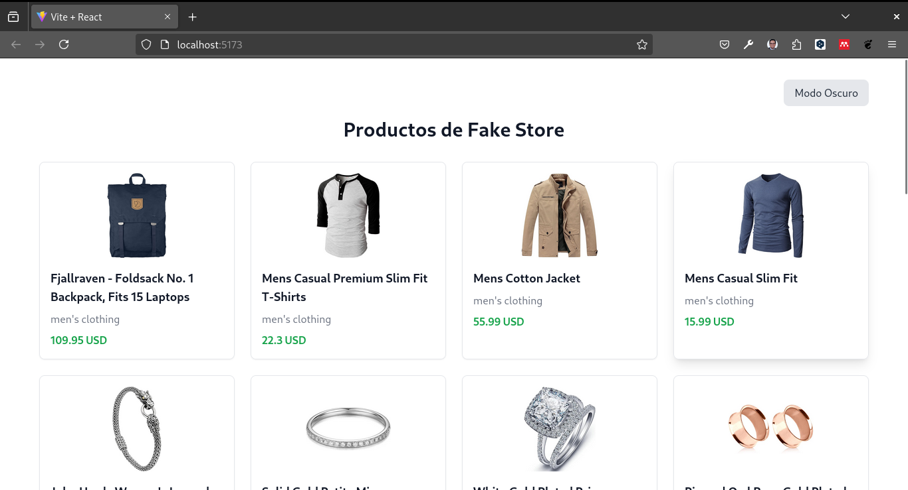
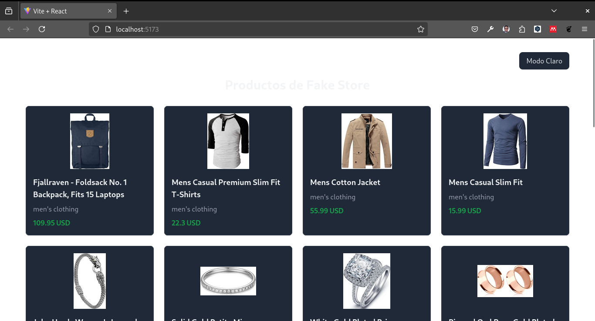

Consumir una API con React con Axios.


1. Crear un Proyecto React con Vite y Tailwind CSS
Vamos a crear un proyecto React utilizando Vite y configuraremos Tailwind CSS para el estilizado.
Pasos:
- Crear un nuevo proyecto con Vite:
Abre tu terminal y ejecuta:
mkdir my-fake-store-axios
cd my-fake-store-axios
npm create vite@latest .- Instalar las dependencias:
Instala las dependencias necesarias para el proyecto:
npm install- Instalar Tailwind CSS:
Ejecuta los siguientes comandos para instalar Tailwind CSS y sus dependencias:
npm install -D tailwindcss postcss autoprefixer
npx tailwindcss init- Configurar Tailwind CSS:
Agrega las rutas a los archivos de tu proyecto en el archivo tailwind.config.cjs:
/** @type {import('tailwindcss').Config} */
module.exports = {
darkMode: 'class', // Habilita el modo oscuro utilizando la clase 'dark'
content: [
'./index.html',
'./src/**/*.{js,ts,jsx,tsx}',
],
theme: {
extend: {},
},
plugins: [],
}- Crear y configurar postcss.config.cjs:
Crea un archivo postcss.config.cjs en la raíz de tu proyecto y añade el siguiente contenido:
module.exports = {
plugins: {
tailwindcss: {},
autoprefixer: {},
},
}- Añadir directivas de Tailwind CSS:
Crea un archivo src/index.css (si no existe) y añade las directivas de Tailwind CSS:
@tailwind base;
@tailwind components;
@tailwind utilities;- Iniciar el servidor de desarrollo:
Ejecuta el siguiente comando para iniciar el servidor de desarrollo:
npm run devAbre tu navegador en http://localhost:5173 para ver la aplicación en funcionamiento.
2. Estructura del Proyecto
Separaremos la lógica de la aplicación en componentes más pequeños:
- ProductCard: Componente que mostrará cada producto individual.
- ProductList: Componente que gestionará la lista de productos.
La estructura de directorios será:
src/
│
├── components/
│ ├── ProductCard.jsx
│ └── ProductList.jsx
└── App.jsx3. Creación de los Componentes
ProductCard.jsx
Este componente mostrará la información de cada producto de manera estilizada con Tailwind CSS.
import React from 'react';
function ProductCard({ product }) {
return (
<div className="border border-gray-200 dark:border-gray-700 p-4 rounded-lg shadow-sm hover:shadow-lg transition duration-300 dark:bg-gray-800">
<img
className="w-32 h-32 object-contain mx-auto"
src={product.image}
alt={product.title}
/>
<h3 className="text-lg font-semibold mt-4 text-gray-900 dark:text-gray-100">
{product.title}
</h3>
<p className="text-gray-500 mt-2 dark:text-gray-400">{product.category}</p>
<p className="text-green-600 font-bold mt-2">{product.price} USD</p>
</div>
);
}
export default ProductCard;ProductList.jsx
Este componente gestionará la lógica de la API y renderizará los productos usando el componente ProductCard.
import React, { useState, useEffect } from 'react';
import ProductCard from './ProductCard';
function ProductList() {
const [products, setProducts] = useState([]);
const [loading, setLoading] = useState(true);
const [error, setError] = useState(null);
const fetchProducts = async () => {
try {
const response = await fetch('https://fakestoreapi.com/products');
if (!response.ok) {
throw new Error('Algo salió mal al obtener los productos');
}
const data = await response.json();
setProducts(data);
setLoading(false);
} catch (error) {
setError(error.message);
setLoading(false);
}
};
useEffect(() => {
fetchProducts();
}, []);
if (loading) return <p className="text-center text-gray-500">Cargando productos...</p>;
if (error) return <p className="text-center text-red-500">Error: {error}</p>;
return (
<div className="grid grid-cols-1 sm:grid-cols-2 lg:grid-cols-4 gap-6">
{products.map((product) => (
<ProductCard key={product.id} product={product} />
))}
</div>
);
}
export default ProductList;4. Integración en App.jsx
Finalmente, integra el componente ProductList dentro de tu archivo App.jsx y añade la funcionalidad de cambio de tema entre oscuro y claro.
import React, { useState } from 'react';
import ProductList from './components/ProductList';
function App() {
const [darkMode, setDarkMode] = useState(false);
return (
<div className={`min-h-screen ${darkMode ? 'dark' : ''}`}>
<div className="container mx-auto px-4 py-8">
<div className="flex justify-end mb-4">
<button
className="px-4 py-2 bg-gray-200 text-gray-800 rounded-lg dark:bg-gray-800 dark:text-gray-200"
onClick={() => setDarkMode(!darkMode)}
>
{darkMode ? 'Modo Claro' : 'Modo Oscuro'}
</button>
</div>
<h1 className="text-3xl font-bold text-center mb-8 text-gray-900 dark:text-gray-100">
Productos de Fake Store
</h1>
<ProductList />
</div>
</div>
);
}
export default App;5. Estilizado con Tailwind CSS
Tailwind CSS te permite estilizar la aplicación de manera eficiente. Aquí hay un desglose de algunas clases utilizadas:
- min-h-screen: Asegura que el contenedor principal ocupe toda la altura de la pantalla.
- dark: Clase utilizada para activar el modo oscuro.
- border, rounded-lg, shadow-sm: Añaden bordes, esquinas redondeadas y sombras suaves.
- transition, hover:shadow-lg: Crea un efecto de transición en el hover.
6. Ejecución del Proyecto
Con todo el código en su lugar, puedes ejecutar tu aplicación:
npm run devVisita http://localhost:5173 en tu navegador para ver la lista de productos de la Fake Store API estilizados con Tailwind CSS.
Crear un Build de Producción
Para crear un build optimizado para producción, ejecuta el siguiente comando:
npm run buildEste comando generará una carpeta dist con los archivos optimizados para producción.
Para probar el build de producción, puedes usar npx para ejecutar el servidor de pruebas sin necesidad de instalación global.
Ejecuta el siguiente comando:
npx serve -s distLuego, abre tu navegador en http://localhost:5000 para ver la aplicación en funcionamiento.
Conclusiones
En este tutorial, aprendiste a consumir una API con React y a estilizar la aplicación con Tailwind CSS. También implementaste la funcionalidad de cambio de tema entre oscuro y claro. Ahora puedes aplicar estos conceptos en tus propios proyectos para crear aplicaciones web modernas y atractivas.